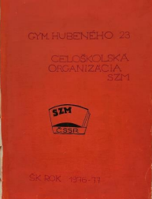

Naša škola bola zriadená prvého septembra 1972 a na škole začínalo študovať dvestosedemdesiat žiakov. O štyri roky neskôr – v r.1976 - vznikla prvá trieda so zameraním na telesnú výchovu, a to presnejšie na basketbal. V roku 1993 zaradilo MŠ SR naše gymnázium do siete 8-ročných gymnázií. V roku 2019 sa u nás otvorila prvá bilingválna trieda päťročného štúdia.
Keďže prvá trieda na tejto škole bola basketbalová, celkom očividne všetci na škole milovali basketbal. V basketbale sme vyhrali taktiež veľa trofejí, ktoré môžete vidieť na chodbách našej školy. Naši bývalí žiaci boli tak talentovaní, že sa prebojovali aj do zahraničia, napríklad do Mexika.
Keď sa zrušilo vyučovanie v sobotu, tak sa namiesto učenia začalo chodiť na brigády, až sa z každej soboty stala každá druhá sobota. Brigádovalo sa u nás najmä v zemiakovom a uhorkovom priemysle.
Tradičný beh, takzvaný lesný beh, sa u nás konal každý rok. Najpopulárnejšia súťaž bola recitačná súťaž z ruského jazyka ,,Puškinov pamätník,´´ keďže sa v našej kronike vyskytuje častejšie ako všetky ostatné. V olympiáde z ruského jazyka sa nám veľmi darilo. Recitačné súťaže v slovenskom jazyku u nás tiež veľmi fičali, ich obsahom bol prednes slovenskej poézie a prózy. Pre všetkých sa organizovala aj Spartakiáda a mnohé ďalšie súťaže.
Na Hubenke sa vždy vedelo, ako sa zabávať a oslavovať. Odviazať sa vedel každý, napríklad aj učitelia, ale hlavne žiaci. Samozrejme maturity boli super pre tých, ktorí si niečo z nich pamätajú.
Naša škola má vlastnú kroniku, ktorá sa píše od roku 1972. Je to studnica spomienok na časy minulé. Z tejto kroniky sme čerpali veľa námetov a nápadov na tento článok a taktiež odtiaľ pochádzajú všetky obrázky.
